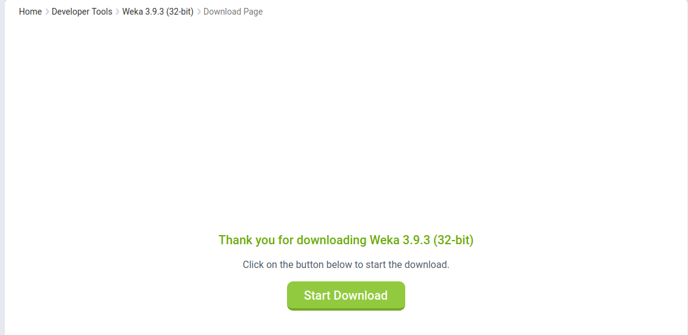
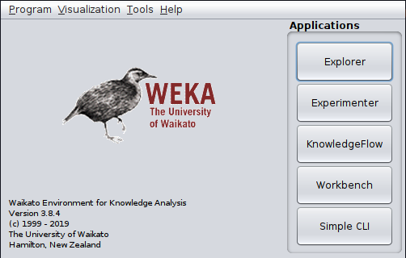
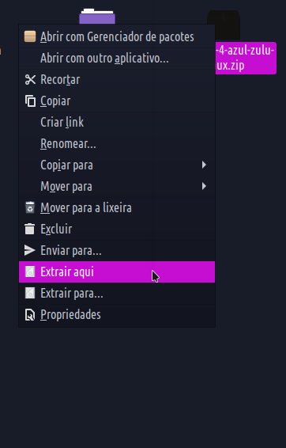
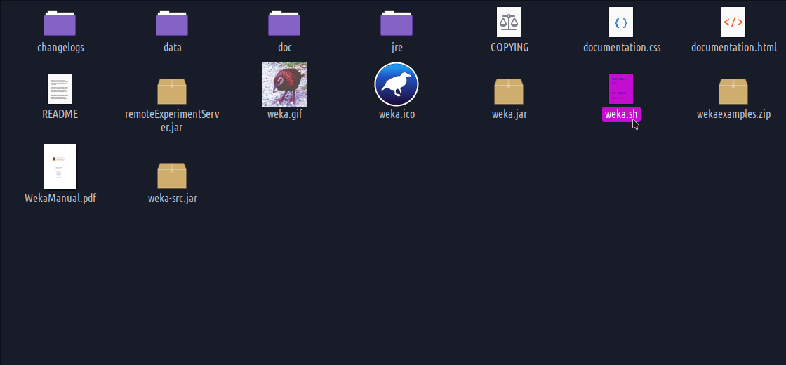

Instalando o Weka 
 Instalando no windows:
Instalando no windows:

(ver.32bits):

após isso você devera clicar no arquivo executavel e abri-lo dessa forma:
Permita ser executado como administrador, após isso é só clicar em próximo nas opções e por fim clicar em finish!
o que você verá ao abrir será essa tela:

 Instalando no Mac OS:
Instalando no Mac OS:
Após dar next das opções de instalação você deve dar finish.
o que você verá ao abrir será essa tela:
 Instalando no Linux (UBUNTU):
Instalando no Linux (UBUNTU):
Após fazer o download você deve extrair os arquivos para uma pasta qualquer, ou extrair onde o mesmo ja está, dessa forma:

Após extrair você deve entrar na pasta extraída e executar o arquivo (weka.sh)

o que você verá ao executar será essa tela: